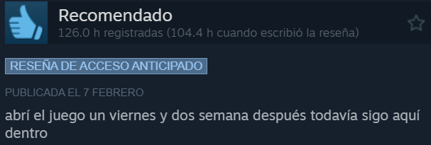
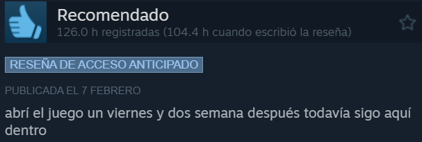

Desde la nada hasta el exito
Trayectoria de desarrollo
En un principio, el desarrollo iba a ser de 1 año, con una cantidad de 25 monstruos. Sin embargo, por el apoyo dado por los jugadores, el tiempo de desarrollo sé amplio año tras año.
Primer año de desarrollo
Al principio no hicieron una gestión presupuestaria sobre el juego, decidieron hacer avances durante los 3 primeros meses y mostrarlo en un evento de presentación de videojuegos. Como fue bien recibido tanto en Japón como en el extranjero, decidieron desarrollarlo, ampliar más el contenido y estimaron que en un año estaría terminado. Para ello, era imposible que sus 10 trabajadores que tenían se dedicaran tanto en este título como en Craftopia, que saldría más antes. Así que tuvieron que crear un nuevo grupo con 4 personas que se dedicaran exclusivamente en Palworld.
Segundo año de desarrollo
Un año después del desarrollo, el videojuego no estaba terminado. En ese momento era solamente un juego de disparar armas y capturar enemigos.
Faltaba por implementar la mayoría de las funciones que tiene Palworld cuando salió en Steam. Debido a esto, se dieron cuenta de que no había suficiente personal, dinero o tiempo de desarrollo para hacer posible el juego que habían imaginado. Había que abarcar varios problemas:
- 1 mes para crear un modelo 3D de un monstruo, por lo que se necesitaría 100 meses para 100 figuras.
- Necesitaban urgente muchos artistas para hacer un mundo abierto.
El equipo directivo, se dieron cuenta de que esto se trataba de un proyecto de desarrollo a gran escala que requería una planificación cuidadosa. Por ello decidieron seguir desarrollándolo durante 2 años más sin tener en cuenta el presupuesto.
Tercer año de desarrollo
Durante el último año de desarrollo, antes de lanzarse a Steam, se contrataron a más de 40 personas más y realizaron aún más subcontratación. Finalmente, se pudo completar, dejandolo en condiciones para lanzarlo como early access. Esta hazaña se consiguió debido a que nunca se pusieron un tope con el presupuesto que deberían de gastar ya que, pensaban que sería más un estorbo que una ayuda. Esto es lo que dijo el jefe de la empresa respecto a esto: No se sabe cuánto dinero costó. Ni siquiera quiero verlo. A juzgar por las ventas de Craftopia, probablemente sean alrededor de mil millones de yenes... Porque todas esas ventas se han acabado.
Exito que esta teniendo
Ha sido apodado como el Pokémon con pistolas debido a su gran parecido estético. Aunque se inspiró en muchos más títulos como Fortnite, Genshin Impact. Esta combinación provocó el éxito descomunal que obtuvo desde su lanzamiento en Steam.
Tras sus tres primeros días en el mercado, ha conseguido ser el 2º juego más vendido en Steam de toda la historia. Además, está en la 5º posición a nivel general, detrás de Elden Ring o Cyberpunk 2077. Pero no menos importante, la primera semana de su lanzamiento, fue el juego más jugado diariamente en la plataforma Steam, superando a Counter Strike 2, con más de 300.00 usuarios.
El gran apoyo que tuvo antes de su lanzamiento, inesperado por Pocketpair, hizo que unas horas antes de su lanzamiento, la empresa Pocketpair pidiera ayuda a Epic Games por si los servidores que tenían no fuesen capaces de dar soporte a la gran cantidad de jugadores que se estimaban.
A día de hoy, se estima que el éxito de Palworld no será pasajero. Ya que todavía falta para poder jugar a la versión definitiva, por lo que tienen mucho margen para añadir más contenido, implementar mejoras, aumentar servidores….etc. Esta opinión se refuerza con los comentarios de los jugadores en la reseña del videojuego.
 

Polemica con Pokemon Company
Desde el primer momento, los parecidos entre Pokémons y Palworld hizo saltar las alarmas por los parecidos no solo entre los diseños de los personajes, sino por las coincidencias en el desarrollo. Aunque 'Palworld' está más enfocado a la supervivencia, también cazar a los Pals, como en Pokémon, se lleva una parte importante del juego.
Donde podría correr peligro Palworld es en el modelado de las criaturas. Varios aficionados afirman que los modelados podrían provenir de 'Pokémon Espada y Escudo' y 'Pokémon Escarlata y Púrpura'. Además, en X se puede encontrar varias comparaciones de los modelados donde se pueden observar que las similitudes son bastante notable.
La respuesta de The Pokémon Company, respecto a estas acusaciones de posible plagio, fue que pretenden:“investigar y tomar las medidas adecuadas”. Ya que indicaron, en su página web, que en ningún momento han dado permisos a ninguna otra compañía para usar sus diseños.
Por último, esta polémica también derivó en el tema de conversación de que Palworld es un gran ejemplo de como The Pokémon Company no supo adaptar Pokemon a los nuevos tiempos.
Privacidad
Aviso legal
Licencia
Politicas de cookies
Consentimiento
Privacidad
Aviso legal
Licencia
Políticas de cookies
Consentimiento
© 2024 PALWORLDERS, S.L. Derechos reservados.